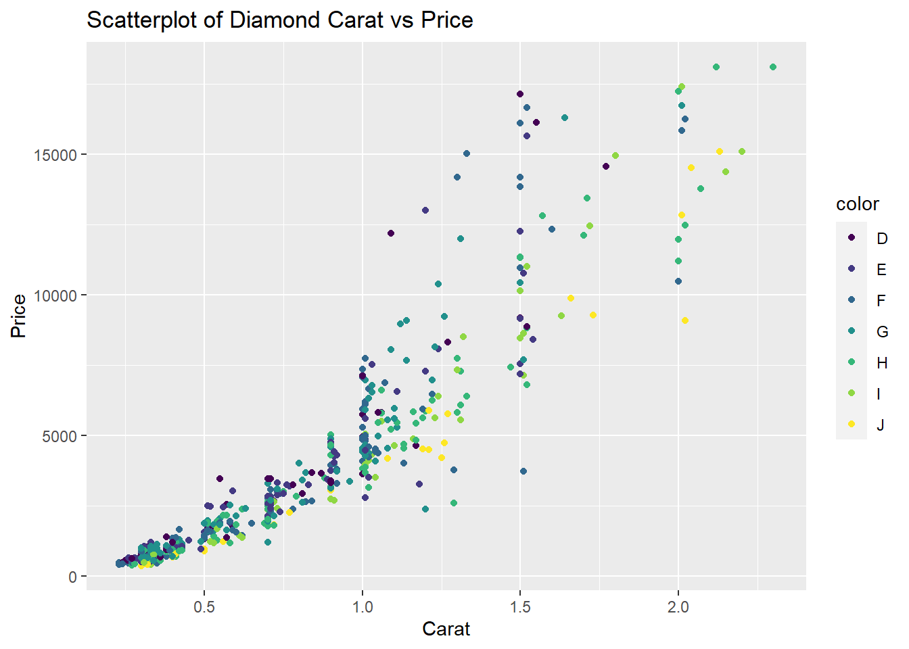
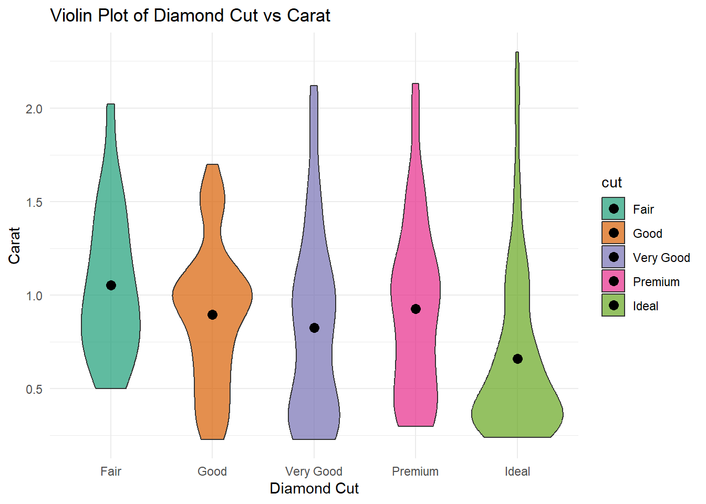

Ara, carreguem el nostre DS, basat en observacions de diamants:
Warning: package 'ggplot2' was built under R version 4.3.1
Attaching package: 'dplyr'
The following objects are masked from 'package:stats':
filter, lag
The following objects are masked from 'package:base':
intersect, setdiff, setequal, union
# A tibble: 6 × 10
carat cut color clarity depth table price x y z
<dbl> <ord> <ord> <ord> <dbl> <dbl> <int> <dbl> <dbl> <dbl>
1 0.23 Ideal E SI2 61.5 55 326 3.95 3.98 2.43
2 0.21 Premium E SI1 59.8 61 326 3.89 3.84 2.31
3 0.23 Good E VS1 56.9 65 327 4.05 4.07 2.31
4 0.29 Premium I VS2 62.4 58 334 4.2 4.23 2.63
5 0.31 Good J SI2 63.3 58 335 4.34 4.35 2.75
6 0.24 Very Good J VVS2 62.8 57 336 3.94 3.96 2.48
La pregunta què volem respondre amb aquest conjunt de dades és quin
Anàlisi exploratòria de les dades:
Facem un petit resum i anàlisi exploratòria de les nostres dades. Notem que ja estan en format tidy: tenim 53940 observacions de 10 variables.
Recordem que les variables del nostre dataset són
carat: El pes del diamant en quirats. Un quilate és una unitat de mesura de pes utilitzada en gemologia i joieria per mesurar diamants i altres pedres precioses. Un quilate equival a 0.2 grams o 200 mil·ligrams. És important tenir en compte que el pes d’un diamant no és l’únic factor que determina el seu valor; altres factors com la claredat, el color i el tall també són fonamentals.
cut: La qualitat del tall del diamant, que pot tenir els nivells següents: “Fair”, “Good”, “Very Good”, “Premium” i “Ideal”.
color: El color del diamant, que es codifica en lletres de la “J” (pitjor) a la “D” (millor).
clarity: La claredat del diamant, que pot tenir els nivells següents: “I1” (la pitjor) fins a “IF” (la millor).
depth: La profunditat total del diamant com a percentatge del seu diàmetre.
table: L’amplada de la part superior del diamant expressat com un percentatge del diàmetre total.
price: El preu del diamant en dòlars nord-americans.
x: La longitud en mil·límetres.
y: L’amplada en mil·límetres.
z: La profunditat en mil·límetres.
Aquestes variables s’utilitzen habitualment en anàlisi de diamants i poden ser útils per a l’avaluació de qualitat i preus de diamants en funció de les seves característiques.
Vegem com són aquestes variables:
carat cut color clarity depth
Min. :0.2000 Fair : 1610 D: 6775 SI1 :13065 Min. :43.00
1st Qu.:0.4000 Good : 4906 E: 9797 VS2 :12258 1st Qu.:61.00
Median :0.7000 Very Good:12082 F: 9542 SI2 : 9194 Median :61.80
Mean :0.7979 Premium :13791 G:11292 VS1 : 8171 Mean :61.75
3rd Qu.:1.0400 Ideal :21551 H: 8304 VVS2 : 5066 3rd Qu.:62.50
Max. :5.0100 I: 5422 VVS1 : 3655 Max. :79.00
J: 2808 (Other): 2531
table price x y
Min. :43.00 Min. : 326 Min. : 0.000 Min. : 0.000
1st Qu.:56.00 1st Qu.: 950 1st Qu.: 4.710 1st Qu.: 4.720
Median :57.00 Median : 2401 Median : 5.700 Median : 5.710
Mean :57.46 Mean : 3933 Mean : 5.731 Mean : 5.735
3rd Qu.:59.00 3rd Qu.: 5324 3rd Qu.: 6.540 3rd Qu.: 6.540
Max. :95.00 Max. :18823 Max. :10.740 Max. :58.900
z
Min. : 0.000
1st Qu.: 2.910
Median : 3.530
Mean : 3.539
3rd Qu.: 4.040
Max. :31.800
[1] 53940 10
Com tenim moltes observacions considerarem un subconjunt del dataset de forma aleatòria.
diamants <- diamonds[sample(nrow(diamonds), 300, replace =FALSE),] #seleccionarem 700 mostres aleatòries atès que el df original té massa observacions per a després poder realitzar els clusteringsdim(diamants)
[1] 300 10
Llavors, tenim 7 variables quantitatives: carat, depth, table, price, x, y, z. A més, trobem una variable qualitativa: color, amb 7 possibles nivells; i una d’ordinal: cut.
diamants %>%ggplot(aes(x = cut)) +geom_bar(fill="blue") +labs(x="Qualitat del tall del diamant", y="Nombre de diamants") +theme_bw() +theme(axis.text =element_text(size=20),axis.title =element_text(size=20, face ="bold"))
La majoria de diamants del nostre DS són de qualitat alta.
diamants %>%ggplot(aes(x = color)) +geom_bar(fill='pink') +labs(x="Color del diamant", y="Nombre de diamants") +theme_bw() +theme(axis.text =element_text(size=20),axis.title =element_text(size=20, face ="bold"))
Respecte al color, vegem que hi ha més diversitat, però el color J és el que manco unitats té.
Vegem la distribució de les dades en funcio del color i de cut mitjançant un diagrama de mosaic.
Warning: package 'vcd' was built under R version 4.3.1
Estudiem la distribució dels diamants en funció del preu:
ggplot(data=diamonds) +geom_histogram(binwidth=500, aes(x=price)) +ggtitle("Distribució dels preus dels diamants") +xlab("Preu dels diamants") +ylab("Freqüència") +theme_minimal()
Aquesta és una distribució de cua llarga, amb una concentració elevada d’observacions per sota dels 5.000.
ggplot(diamonds, aes(x = carat, y = price, color = color)) +geom_point() +labs(title ="Scatterplot of Diamond Carat vs Price",x ="Carat",y ="Price")

Sembla que, indistintivament del color del diamant, el preu tendeix a augmentar quan carat creix.
ggplot(diamonds, aes(x = carat, fill = color)) +geom_histogram(binwidth =0.5, position ="identity", alpha =0.7) +labs(title ="Histogram of Diamond Carat vs Frequency",x ="Carat",y ="Frequency")
La distribució és semblant a la dels preus (de cua llarga).
mean_values <- diamonds %>%group_by(cut) %>%summarize(mean_carat =mean(carat))ggplot(diamonds, aes(x = cut, y = carat, fill = cut)) +geom_violin(alpha =0.7) +geom_point(data = mean_values, aes(x = cut, y = mean_carat),color ="black", size =3, shape =19) +labs(title ="Violin Plot of Diamond Cut vs Carat",x ="Diamond Cut",y ="Carat") +scale_fill_manual(values =c("#1b9e77", "#d95f02", "#7570b3", "#e7298a", "#66a61e")) +# Custom color palettetheme_minimal()

Les mitjanes de les carat són molt semblants, si les comparam entre qualitats del tall. Ara bé, les distribucions són prou diferents.
Vegem quina correlació hi ha entre les variables quantitatives
Warning: package 'ggcorrplot' was built under R version 4.3.1
Notem que la variable carat (el pes del diamant amb quilats) està molt correlacionada amb les dimensions d’aquest (x,y i z), la qual cosa té sentit. També estan molt correlacionades positivament les variables x,y,z, carat i preu.
També vegem que les variables depth i table tenen una mica de correlació negativa.
Anàlisi de Clustering
El nostre objectiu es predir el rang de preu que tenen els diamants mitjançant l’informació que ens proporcionen les altres variables.
Primer, cream una nova variable “price_grups” que emagatzema els preus dels diamants per rangs.
diamants$price_grup <-cut(diamants$price, breaks =c(0,1000,2500, 5000, 10000, 15000, 20000, Inf),labels =c("0-1000", "1000-2500","25001-5000", "5001-10000", "10001-15000", "15001-20000", "20001+"))# Visualizem la distribució dels diamants en cada rang de preusggplot(diamants, aes(x = price_grup, fill = price_grup)) +geom_bar() +labs(title ="Distribució dels diamants en diferents rangs de preus",x ="Rang de preus",y ="nombre de diamants")
Com hem vist abans al summary els valors de la variable “carat” varien entre 0.23 i 2.3 i té mitjana 0.8161 i la variable “depth” varia entre 57.80 i 67.20 i té mitjana 61.84.
Aleshores, com la magnitud entre variables difereix de forma notable entre variables és convenient escalarles abans de fer el clustering.
#primer seleccionam nomes les variables que ens interessen pel clusteringdades <- diamants %>%na.omit(.) %>%select(carat)dades <-scale(dades, center =TRUE, scale =TRUE)
Una forma senzilla d’estimar el nombre K òptim de clústers quan no es disposa d’informació addicional en la qual basar-se és aplicar l’algorisme per a un rang de valors de K, identificant aquell a partir del qual la reducció en la suma total de variància intraclúster deixa de ser substancial. Usarem la funció fviz_nbclust() que automatitza aquest procés. En aquest cas, donat que es sospita de la presència d’outliers, s’emplea la distància de Manhattan com a mesura de similitud.
Vegem-ho
library(cluster) library(factoextra)
Warning: package 'factoextra' was built under R version 4.3.2
Welcome! Want to learn more? See two factoextra-related books at https://goo.gl/ve3WBa
Tots els diamants amb preus al rang 0-1000 cauen en el clúster 1. Els que es troben en els rang 2501-5000 cauen en el cluster 2 manco un petita quantitat(4 diamants de 71).,,,,